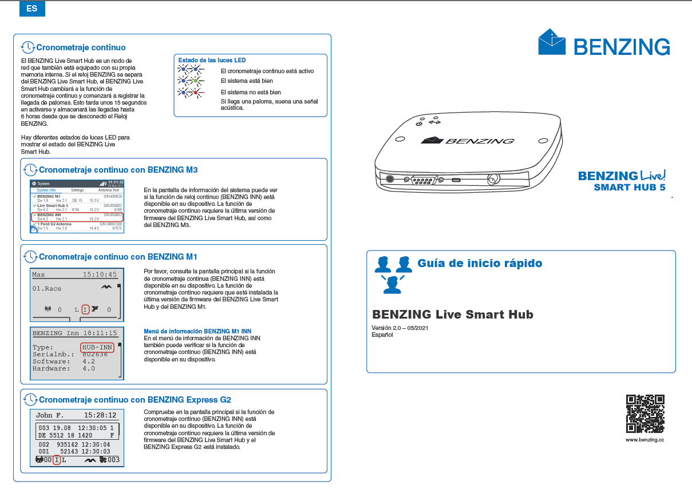
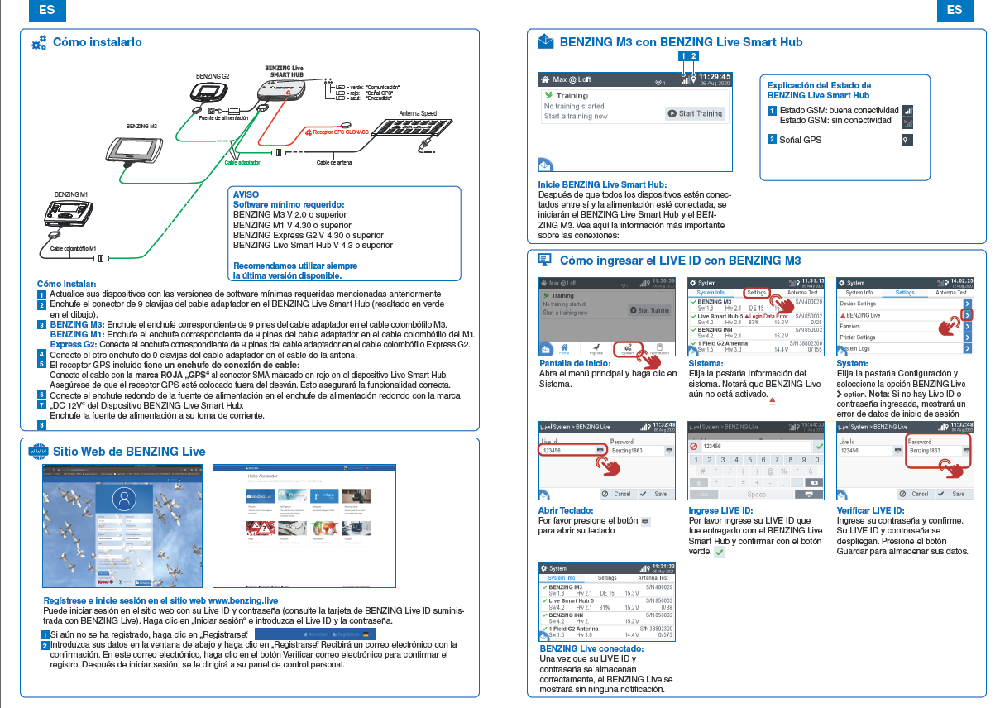
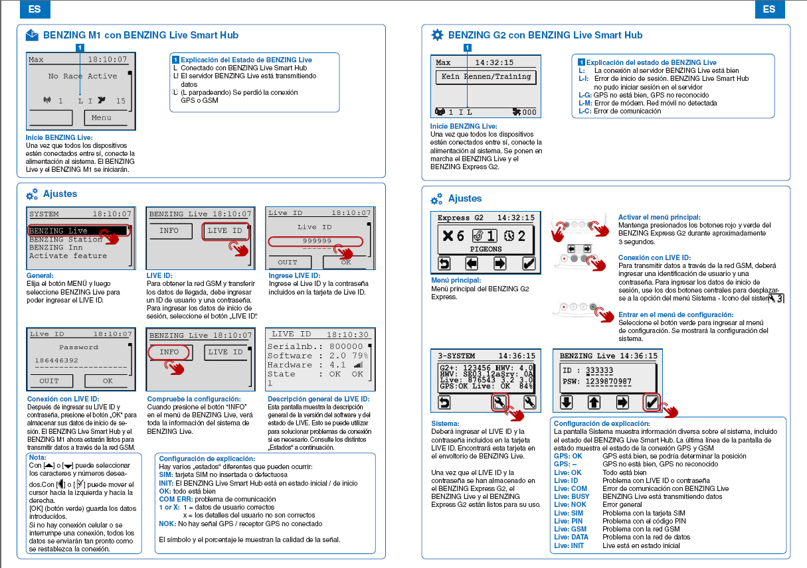

BENZING LIVE.- Conexiones basicas y Registro en MyPigeons.
Realizado por nuestro compañero Joaquin.-

BENZING LIVE.- Toda la instalación y registro todo paso a paso, entrenamientos y carreras.
Realizado por nuestro compañero Gabriel.-

BENZING M1 M2 M3 y G2.- Enceste de carrera.
Realizado por nuestro compañero Joaquin.-

BENZING M3.- Activar entreno.-
Realizado por nuestro compañero Joaquin.-

BENZING M3.- Autochipado.-
Realizado por nuestro compañero Joaquin.-

BENZING M3.- Cambio de hora.
Realizado por nuestro compañero Joaquin.-

BENZING M3 M2.- Borrar carrera y generar una nueva.-
Realizado por nuestro compañero Joaquin.-




Palomar Saavedra